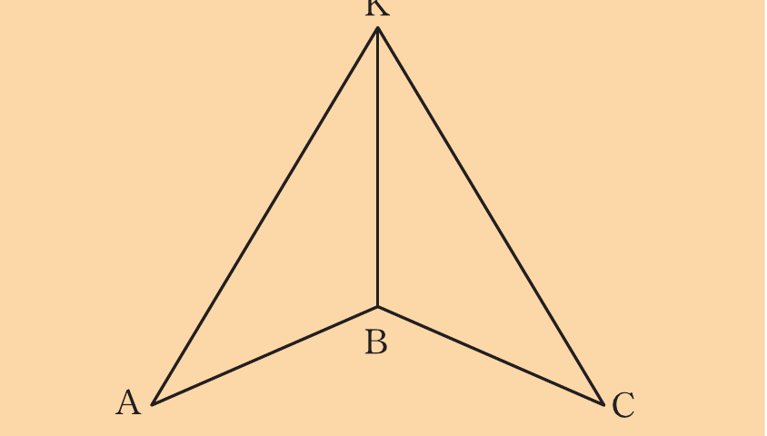
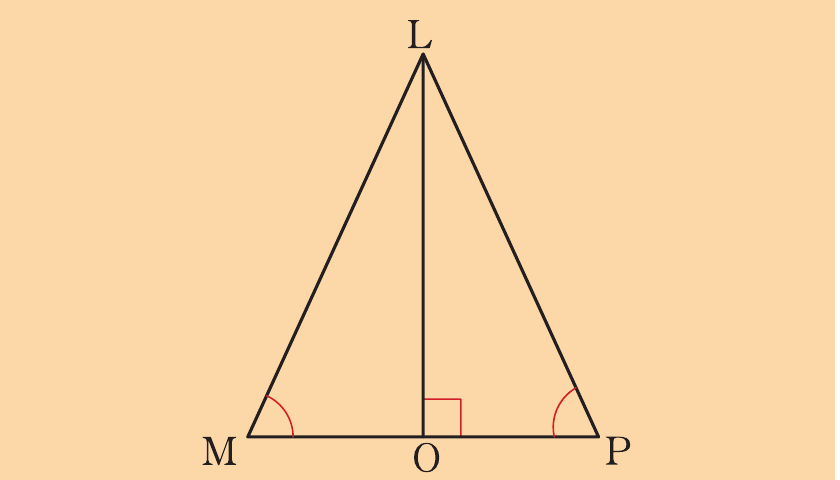

Revision exercise 2
1.
In the following figure, and .

Prove that BÂK = BĈK.
2.
A quadrilateral MNOP has the property that MN = OP and MP = NO.
Prove that PMN = NOP.
3.
Use the following figure to prove that .
